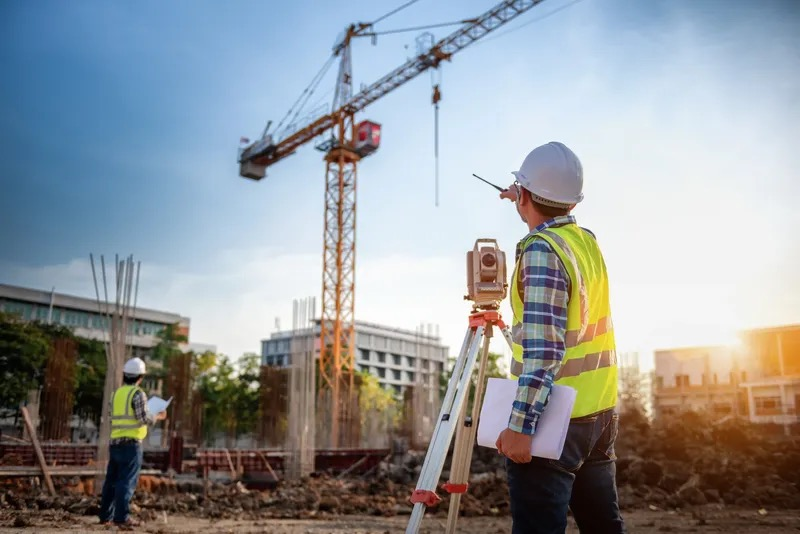

Court terme
Ne pas poursuivre immédiatement les études et continuer dans un poste de géomètre-projeteur en bureau d’études, afin de consolider les compétences acquises en alternance.
Orientation · Objectifs · Projection
Après le BUT GCCD, mon objectif est de valoriser une double compétence : la compréhension du terrain et la production de documents techniques en bureau d’études. Cette page présente mon projet professionnel et les compétences que je souhaite continuer à développer.

Projet professionnel
À court terme, je souhaite entrer pleinement dans la vie professionnelle plutôt que poursuivre immédiatement mes études. Mon objectif est de continuer en tant que géomètre-projeteur en bureau d’études, dans la continuité de mon alternance, afin de renforcer ma maîtrise des plans, des métrés, des réseaux, de la voirie, du chiffrage et de la préparation technique des projets.
Je souhaite construire un parcours progressif, avec une base solide en études VRD et en topographie. À moyen ou long terme, j’aimerais également passer quelques mois sur chantier, par exemple 4 à 6 mois, pour mieux comprendre les contraintes d’exécution, les méthodes de mise en œuvre, les enchaînements de phases et les décisions prises directement sur le terrain.
Cette expérience de terrain, associée à des missions plus proches du métier de géomètre, me permettrait aussi de mieux comprendre comment mes plans, mes implantations, mes métrés ou mes documents sont repris ensuite par les collègues et les équipes d’exécution. L’objectif est de concevoir des documents plus justes, plus lisibles et plus utiles pour l’ensemble du projet.
Projection
Ne pas poursuivre immédiatement les études et continuer dans un poste de géomètre-projeteur en bureau d’études, afin de consolider les compétences acquises en alternance.
Gagner en autonomie sur les dossiers VRD : levés, plans, profils, métrés, réseaux, chiffrage, préparation d’offres et échanges avec les équipes.
Faire une période de chantier ou de terrain, sur 4 à 6 mois, pour mieux comprendre l’exécution, l’implantation, les reprises de plans et les besoins concrets des équipes.
Diaporama intégré